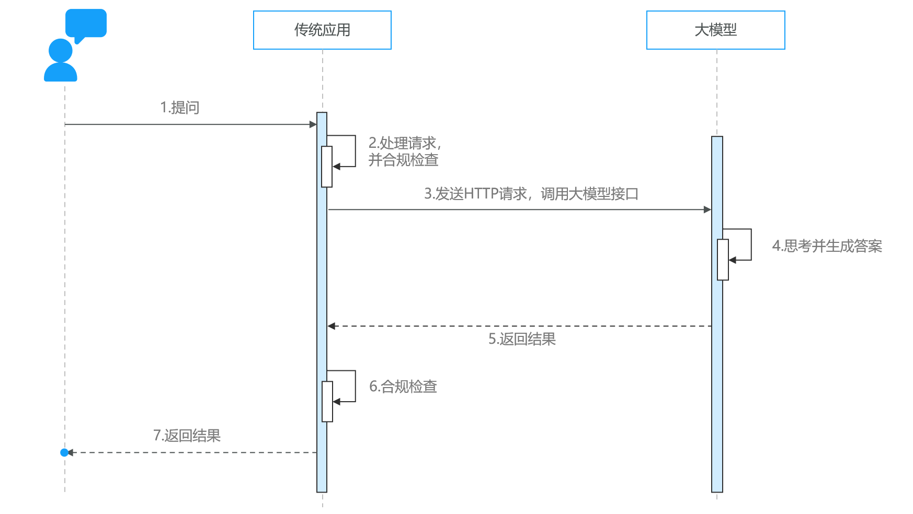

与大模型的交互
正在读取本章记录下次复习：—
请通过“启动学习站.cmd”进入，才能写入数据库。
那么问题来了：传统程序该如何与大模型交互呢？
答案是：调用接口。
大模型在部署时通常都会对外暴露基于HTTP协议的API接口，我们可以用任何自己喜欢的方式调用该接口，实现与大模型的交互：

当然，首先我们需要有一个可以调用的大模型服务。
大模型服务
前面说过：大模型应用开发并不是在浏览器中跟AI聊天。而是通过访问模型对外暴露的API接口，实现与大模型的交互。
因此，企业开发大模型应用，首先需要有一个可访问的大模型，通常有两种选择：
-
使用开放大模型
-
部署私有大模型
使用开放大模型API的优缺点如下：
-
优点：
- 没有部署和维护成本，按调用收费
-
缺点：
-
依赖平台方，稳定性差
-
长期使用成本较高
-
数据存储在第三方，有隐私和安全问题
-
部署私有模型：
-
优点：
-
数据完全自主掌控，安全性高
-
不依赖外部环境
-
虽然短期投入大，但长期来看成本会更低
-
-
缺点：
-
初期部署成本高
-
维护困难
-
接下来，我们给大家演示下两种部署方式：
-
公共大模型
-
私有大模型（在本机演示，将来在服务器也是类似的）
通常发布大模型的官方、大多数的云平台都会提供开放的、公共的大模型服务。大模型官方前面讲过，我们不再赘述，这里我们看一些国内提供大模型服务的云平台：
| 云平台 | 公司 | 地址 |
|---|---|---|
| DeepSeek | DeepSeek | https://www.deepseek.com |
| 阿里百炼 | 阿里巴巴 | https://bailian.console.aliyun.com |
| 腾讯TI平台 | 腾讯 | https://cloud.tencent.com/product/ti |
| 千帆平台 | 百度 | https://console.bce.baidu.com/qianfan/overview |
| SiliconCloud | 硅基流动 | https://siliconflow.cn/zh-cn/siliconcloud |
| 火山方舟-火山引擎 | 字节跳动 | https://www.volcengine.com/product/ark |
这些开放平台并不是免费，而是按照调用时消耗的token来付费，每百万token通常在几毛\~几元钱，而且平台通常都会赠送新用户百万token的免费使用权。（token可以简单理解成你与大模型交互时发送和响应的文字，通常一个汉字2个token左右）
接下来，我们分别讲解DeepSeek和阿里巴巴的百炼平台。